방송통신산업기사 (2008-09-07 기출문제)
1과목: 디지털 전자회로
1. 다음 중 JK플립플롭의 논리식으로 옳은 것은? (단, Qn 은 시간(t)에서의 출력 상태이고 Qn+1 은 시간 (t+1)에서의 출력 상태임)
- JQn + KQn
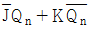
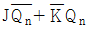
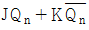
(정답률: 알수없음)

2. 다음 중 불 대수식을 간략화 하면?
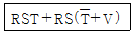
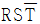
- RSV
- RST
- RS
(정답률: 알수없음)
3. 트랜지스터 h 파라미터의 물리적 의미가 틀린 것은?
- hi : 출력단락 입력 임피던스
- hr : 입력개방 전류 증폭율
- hf : 출력단락 전류 증폭율
- ho : 입력개방 출력 어드미턴스
(정답률: 알수없음)
4. 다음 FET 회로의 전압이득은 약 얼마인가? ( 단, gm = 10[m℧], rd = 50[kΩ])
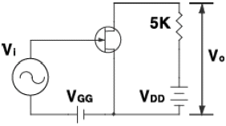
- -15.5
- -23.8
- -33.3
- -45.5
(정답률: 알수없음)
5. 다음 중 궤환발진기의 바크하우젠(Barkhausen)의 발진 조건에서 βA 의 크기는?
- 0
- 1
- 10
- 100
(정답률: 알수없음)
6. 달링텅(Darlington) 회로의 설명으로 틀린 것은?
- 전압 이득이 1보다 작다.
- 전류 이득이 크다.
- 입력 저항이 적다.
- 출력 저항이 적다.
(정답률: 알수없음)
7. 다음 중 그림과 등가인 Gate 회로는?
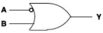
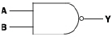
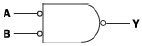
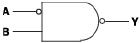
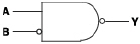
(정답률: 알수없음)
8. 그림과 같은 회로의 명칭이 옳은 것은?
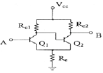
- 시미트 트리거 회로
- 차동 증폭회로
- 푸시풀 증폭회로
- 부트스트랩회로
(정답률: 알수없음)
9. 다음은 반가산기(Half Adder)의 블록도이다. 출력단자 S(sum) 및 C(carry)에 나타나는 논리식은?
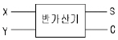
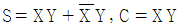
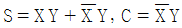
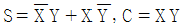
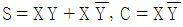
(정답률: 알수없음)
10. 신호파의 최고 주파수가 15[kHz]이다. PCM 검파에서 원래의 신호파로 복원하기 위한 표본화 펄스의 최소 주파수로 옳은 것은?
- 45[kHz]
- 30[kHz]
- 20[kHz]
- 15[kHz]
(정답률: 알수없음)
11. 다음 연산 증폭기에서 입출력 전압 관계식은?
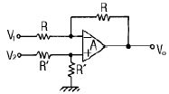
- VO = V2 - V1
- VO = V1 + V2
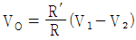
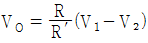
(정답률: 알수없음)
12. 피변조파 I = IC(1+msinWSt)sinWCt 로 표시되는 전류가 부하저항 R에 흐르면 이 때 상측파대의 전력은?
- m2IC2R/8
- m2IC2R/4
- m2IC2R/2
- m2IC2R
(정답률: 알수없음)
13. 다음 중 C급 증폭기의 일반적인 특징이 아닌 것은?
- 효율이 높다
- 출력단에 공진회로가 필요하다.
- 직진성이 좋다
- 고출력용으로 많이 사용된다.
(정답률: 알수없음)
14. 듀티 사이클(duty cycle)이 0.1이고 주기가30[μs]인 펄스의 폭은 얼마인가?
- 10[μs]
- 6[μs]
- 3[μs]
- 1[μs]
(정답률: 알수없음)
15. 다음 논리식 중 서로 관계가 틀린 것은?
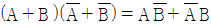
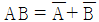
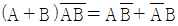
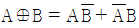
(정답률: 알수없음)
16. RC 회로의 스텝전압 입력시 발생파형의 상승시간(rise time) tr 와 관계 없는 것은? (단, fH : 상측 3dB 주파수, B: 대역폭, τ : 시정수 )
- tr = 2.2RC
- tr = 0.35/fH
- tr = 1/B
- tr = 1.1τ
(정답률: 알수없음)
17. 하나의 논리 케이트 출력이 정상적인 동작 상태를 유지하면서 구동할 수 있는 표준 부하의 수를 의미하는 것은?
- 팬 아웃(fan-out)
- 전력소모(power dissipation)
- 전파지연시간(propagation delay time)
- 잡음 여유도(nosie margin)
(정답률: 알수없음)
18. 진폭변조시 피변조파의 최대진폭이 A, 최소진폭이 B일 경우 변주율(m)은?
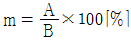
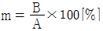
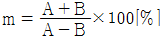
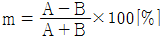
(정답률: 알수없음)
19. 다음 중2진 비교기의 구성요소를 맞게 설명한 것은?
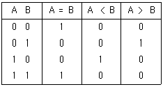
- 인버터 2개, NOR 게이트 2개, NOR 게이트 1개
- 인버터 2개, AND 게이트 1개, NOR 게이트 2개
- 인버터 2개, AND 게이트 2개, EX-NOR 게이트 1개
- 인버터 2개, NAND 게이트 2개, EX-OR 게이트 1개
(정답률: 알수없음)
20. 다음 중 B급 푸시풀 전력 증폭기는 어느 것이 제거 되는가?
- 기본파
- 우수 고조파
- 기수 고조파
- 모든 고조파
(정답률: 알수없음)
2과목: 방송통신 기기
21. 다음 중 영상 편집방법에 있어서 이미 기록된 영상의 중간에 Control 신호의 변환 없이 별도의 영상이나 음성을 삽입할 수 있는 편집 모드는?
- Assemble 편집 모드
- Insert 편집 모드
- Full copy mode
- Preview mode
(정답률: 알수없음)
22. 제1단의 잡음지수 F1 =10, 이득 G1 = 10, 제 2단의 잡음지수 F2 = 11, 이득 G2 = 2, 제3단의 잡음지수 F3 = 21, 이득 G3 = 1인 3단으로 구성된 증폭기의 종합잡음지수는?
- 11
- 12
- 21
- 22
(정답률: 알수없음)
23. DCT 부호화 방식에서 입력 화상의 기본 블록화 화소수는?
- 100
- 64
- 16
- 16
(정답률: 알수없음)
24. 다음 측정장비 중 신호를 시간축으로 표시하여 신호와 파형을 측정하는 것은?
- 벡터스코프
- 오실로스코프
- 스펙트럼 분석기
- 패턴 발생기
(정답률: 알수없음)
25. 다음 중 우리나라 TV 음성다중 방송방식은?
- 2 Carrier
- FM-FM 방식
- AM-FM 방식
- AM-AM 방식
(정답률: 알수없음)
26. NTSC TV 방송에서 영상신호가 차지하는 대역폭[㎒]은?
- 1.2
- 3.5
- 4.2
- 6.0
(정답률: 알수없음)
27. 영상 입력 전압에 대하여 반송파의 진폭이 직선적으로 변화하는 것이 이상적인데, 실제로는 직선으로부터 벗어나 일그러짐이 생긴다. 이를 무엇이라 하는가?
- DG, DP
- 고스트
- 비트방해
- 혼변조
(정답률: 알수없음)
28. 우리나라 아날로그 컬러 TV의 어느 송신 채널의 음성 반송파 주파수가 88[㎒]일 때 영상반송파 주파수[㎒]는 얼마인가?
- 83.5
- 86.7
- 89.2
- 92.5
(정답률: 알수없음)
29. FM 송신기에서 S/N 비를 개선하기 위하여 신호의 고역주파수 부분을 강조하는 것은?
- AFC
- Pre-emphasis
- De-emphasis
- Limiter
(정답률: 알수없음)
30. FM 수신기에서 AFC 회로가 사용되는 주 목적은?
- 수신감도 향상
- 선택도 향상
- 감도 조정
- 주파수 안정도 향상
(정답률: 알수없음)
31. 수직 컬러바에 대해 정밀하고 반복된 신호를 만드는 장비이며 시험과 조정절차를 위해 사용되는 것은?
- 웨이브폼
- 컬러바 발생기
- 벡터스코프
- 정현파 발생기
(정답률: 알수없음)
32. SNG 지구국을 설계하고자 한다. 지구국에서 송신, 위성체에서 신호를 수신하는 UP-LINK 설계시 고려하여야 할 요소가 아닌 것은?
- 영상 및 음성 제작 기술기준
- 자유공간손실
- 위성성능지수
- 잡음대역
(정답률: 알수없음)
33. 다음 중 방송신호의 제작설비와 가장 거리가 먼 것은?
- 스튜디오설비
- 조명설비
- 편집설비
- 송출설비
(정답률: 알수없음)
34. 컬러 TV 송신기에서 영상증폭기를 통한 영상신호와 음성증폭기를 통한 음성신호를 상호간섭 없이 합해 송신 안테나에 공급하는 장치는?
- 집중회로
- 다이플렉서
- 매트릭스회로
- 휘도신호 증폭기
(정답률: 알수없음)
35. 다음 중 송신설비에 해당하지 않은 것은?
- 영상 송신기
- VTR 설비
- 송신공중선
- 송신 급전선
(정답률: 알수없음)
36. 위성통신에서 사용되는 다원접속 방식 중 지구국이 증가해도 회선 효율이 양호하고 프레임 내의 특정위치 (Time Slot)를 각 지구국에 할당함으로써 지구국 상호간에 혼신없이 통신이 가능한 방식은?
- TDMA
- SDMA
- FDMA
- CDMA
(정답률: 알수없음)
37. 다음 중 마이크로웨이브 중계방식에 해당하지 않은 것은?
- 헤테로다인 중계방식
- 간접 중계방식
- 검파 중계방식
- 무급전 중계방식
(정답률: 알수없음)
38. 다음 중 위성방송에서 송·수신을 위한 지구국의 안테나로 가장 적합한 것은?
- 루프안테나
- 야기 안테나
- 카세그레인 안테나
- 롬빅 안테나
(정답률: 알수없음)
39. 다음 중 위성방송에서 사용하고 있는 C-Band의 주파수로 가장 적합한 것은?
- 33~50[㎓]
- 12~16[㎓]
- 4~6[㎓]
- 1~2[㎓]
(정답률: 알수없음)
40. 다음 중 무궁화 위성방송에서 채택하고 있는 변조방식은?
- QPSK
- 8-VSB
- FM
- SSB
(정답률: 알수없음)
3과목: 방송미디어 개론
41. 다음 중 국내 FM 방송의 사용 주파수 대역은?
- 880[㎐]~8800[㎐]
- 88[㎑]~108[㎑]
- 88[㎒]~108[㎒]
- 8.8[㎓]~10.8[㎓]
(정답률: 알수없음)
42. 비디오텍스에서 도형이나 숫자 등을 구성하는 방식이 아닌것은?
- 알파 지오메트릭 방식
- 알파 포토그래픽 방식
- 알파 오브젝트 방식
- 알파 모자이크 방식
(정답률: 알수없음)
43. 멀티미디어의 화상 압축기술이 아닌 것은?
- 예측 부호화 기법
- DCT 기법
- HMD 기법
- 가변길이 부화화 기법
(정답률: 알수없음)
44. 대표적인 것으로 Eureka-147이 있으며 CD 수준의 고품위 음성은 물론 문자나 그래픽, 동화상까지 전송 가능한 방송을 의미하는 것은?
- DRM
- RDS
- DAB
- DARC
(정답률: 알수없음)
45. 다음 중 케이블 TV방송 네트워크 시스템에서 광케이블과 동축케이블을 인터페이스 하는 것은?
- TBC
- ONU 혹은 OTR
- TBA
- VOD
(정답률: 알수없음)
46. 다음 중 문자 폰트를 표현하는 방식이 다른 하나는?
- 비트맵 방식
- 트루타입 방식
- 포스트스크립트 방식
- 벡터 방식
(정답률: 알수없음)
47. 멀티미디어 및 하이퍼미디어의 정의, 부호화 원칙, 시스템 요구사항, 오브젝트 클래스이용한 부호화 표현 등을 목적으로 하는 표준화 그룹은?
- MPEG-1
- MPEG-2
- MPEG-4
- MPEG
(정답률: 알수없음)
48. 지상파 디지털 TV 방송규격의 ATSC 표준 요구사항이 아닌것은?
- 채널대역폭 6㎒ 유지
- SFN(Signal Frequency Network) 구성
- 고음질 추구
- 고화질 추구
(정답률: 알수없음)
49. 다음 중 무궁화 위성에서 중계기의 통신 및 방송용 채널대역 폭으로 적합한 것은?
- 통신 36[㎒], 방송 36[㎒]
- 통신 27[㎒], 방송 36[㎒]
- 통신 36[㎒], 방송 27[㎒]
- 통신 27[㎒], 방송 27[㎒]
(정답률: 알수없음)
50. 다음 중 방송 미디어에 속하지 않는 것은?
- CATV
- TV
- VRS
- FM
(정답률: 알수없음)
51. 다음 중 통신계 미디어가 아닌 것은?
- 비디오텍스
- 화상회의
- 팩시밀리방송
- 전화
(정답률: 알수없음)
52. 다음 중 집적 회로에 의해서 구성된 활상 소자는?
- 플럼비콘
- CCD
- 세티콘
- 아이코너 스코프
(정답률: 알수없음)
53. 멀티미디어의 사운드 파일 형식이 아닌 것은?
- RA
- WAV
- MP3
- GIF
(정답률: 알수없음)
54. 영상신호에서 컬러 버스트(color burst)가 컴포지트(composite) 신호에 실리는 기간은?
- 수직귀선시간
- 수평귀선기간
- 수평주사시간
- 수직주사기간
(정답률: 알수없음)
55. 무궁화 위성의 정지궤도 위치는?
- 적도 상공 약 36000[㎞] 정도
- 방송하는 국가의 상공 약 30000[㎞] 정도
- 북극점 상공 약 40000[㎞] 정도
- 남극점 상공 약 50000[㎞] 정도
(정답률: 알수없음)
56. 다음 중 위성 방송망에 대한 설명으로 틀린 것은?
- 정보의 전달에 동보성을 갖는다.
- 전파의 수신이 산악이나 지형의 영향을 거의 받지 않는다.
- 각 지역별 로컬 방송이 용이하다.
- 재해시 방송망을 확보하거나 중계 회선을 대체하는데 사용될수 있다.
(정답률: 알수없음)
57. 샘플링 신호배율은 영상신호 중 휘도신호와 색차성분을 디지털화 할 때 사용한다. 다음 중 영상의 압축 및 전송등에서 샘플링 규격에 해당되지 않는 것은?
- 4 : 1 : 1
- 4 : 2 : 2
- 4 : 3 : 2
- 4 : 4 : 4
(정답률: 알수없음)
58. NTSC 방송에서 색도신호인 I 신호의 대역폭[㎒]은?
- 4.5
- 2.5
- 1.5
- 0.5
(정답률: 알수없음)
59. NTSC 컬러 TV 방식에서 R, G, B 삼원색으로부터 휘도 신호 Y와 색차신호 T-Y, B-Y, G-Y로 변환 사용하고 있다. 다음 중 관계가 틀린 것은?
- EY =0.3ER + 0.59EG + 0.11EB
- EY =0.7ER - 0.59EG - 0.11EB
- EY =0.7ER - 0.59EG - 0.89EB
- EY =-0.3ER + 0.41EG - 0.11EB
(정답률: 알수없음)
60. 다음 중 정지화상의 부호화 압축표준으로 사용되는 것은?
- MPEG-2
- MPEG-4
- JPEG
- H.261
(정답률: 알수없음)
4과목: 전자계산기 일반 및 방송설비기준
61. 다음 중 어떤 현상의 복잡한 과정을 유사한 모델을 사용하여 실험하고 이로부터 최적해를 구하는 모의실험을 의미하는 것은?
- 제어프로그램
- 시뮬레이션
- 컴파일러
- 에뮬레이터
(정답률: 알수없음)
62. 2진화 10진 코드(BCD)는 최대 몇 개의 문자를 표현할 수 있는가?
- 4자
- 8자
- 64자
- 128자
(정답률: 알수없음)
63. CPU가 다음에 처리해야 할 명령이나 데이터의 메모리상의 번지를 지시하는 것은?
- IR
- PC
- SP
- MAR
(정답률: 알수없음)
64. 입출력 레지스터들을 액세스 할 때는 반드시 별도의 명령어들을 사용해야 하며, 입출력 주소 공간이 기억장치 주소공간과는 별도로 지정 될 수 있는 장점을 갖는 방식은?
- Memory-mapped I/O
- Isolated I/O
- Interrupt I/O
- Programmed I/O
(정답률: 알수없음)
65. 스택 구조를 갖고 있는 주소 방식은?
- 0-주소 방식
- 1-주소 방식
- 2-주소 방식
- 3-주소 방식
(정답률: 알수없음)
66. C 언어에서 입출력 함수에서 사용하는 정수형으로 16진수로 변환하는 령식인자는?
- %d
- %x
- %o
- %f
(정답률: 알수없음)
67. CPU가 명령어를 갖고 마이크로오퍼레이션을 수행하는데 요구되는 시간을 의미하는 것은?
- CPU 검색 타임
- CPU 액세스 타임
- CPU 실행 타임
- CPU 사이클 타임
(정답률: 알수없음)
68. 중앙처리 장치와 입·출력 장치 사이의 속도차이를 해결하기 위한 방법과 거리가 먼 것은?
- 인터럽트(interrupt)
- 버퍼링(buffering)
- 스풀링(spooling)
- 채널(channel)
(정답률: 알수없음)
69. 2진수 0111을 그레이 코드(Gray code)로 변환하면?
- 1010
- 0100
- 0000
- 1111
(정답률: 알수없음)
70. 유닉스 계열의 운영체제에서 각 파일이 만들어질 때, 운영체제에 의해 부여되는 고유 번호를 의미하는 것은?
- PCB
- I-node
- kernel
- file descriptor
(정답률: 알수없음)
71. 다음 중 공중선계의 충족 조건이 아닌 것은?
- 공중선은 이득이 높을 것
- 정합은 신호의 반사손실이 최소화 되도록 할 것
- 지향성은 복사되는 전력이 목표하는 방향을 벗어나지 아니하도록 안정적일 것
- 감도는 낮은 신호입력에서도 양호할 것
(정답률: 알수없음)
72. 다음 중 방송의 공적 책임에 관한 내용에 속하는 것은?
- 방송은 국민의 알권리와 표현의 자유를 보호하여야 한다.
- 방송은 지역사회의 균형있는 발전을 도모하여야 한다.
- 방송은 타인의 명예를 훼손하거나 권리를 침해하여서는 아니된다.
- 방송은 표준말의 보급에 이바지 하고 언어 순화에 힘써야 한다.
(정답률: 알수없음)
73. 다음 중 방송국설비공사에 속하지 않는 것은?
- 영상·음향설비 공사
- 송출설비 공사
- 방송관리시스템설비 등의 공사
- CCTV설비 공사
(정답률: 알수없음)
74. 다음 중 “방송국”에 대한 정의로 가장 적합한 것은?
- 공중에게 전파함을 목적으로 행하는 통신국
- 특정한 방송 주파수를 이용할 수 있는 무선국
- 공중이 방송신호를 직접 수신할 수 있도록 할 목적으로 개설한 무선국
- 방송설비와 방송설비를 조작하는 자의 총체
(정답률: 알수없음)
75. 다음 중 방송국 전파의 질에 해당하지 않는 것은?
- 주파수 허용편차
- 기생발사강도의 세기
- 주파수대폭의 허용치
- 스퓨리어스영역 불요발사의 허용치
(정답률: 알수없음)
76. 종합유선방송국에서 주전송장치에 입력하여야 하는 영상신호의 동기레벨은?
- 0±1 IRE 이내
- 10±1 IRE 이내
- 20±1 IRE 이내
- 40±1 IRE 이내
(정답률: 알수없음)
77. 다음 중 방송 공동수신설비에 해당하지 않는 것은?
- 수신안테나
- 레벨조정기
- 신호처리기
- 송신안테나
(정답률: 알수없음)
78. 방송사업을 하고자 하는 경우 허가신청서에 첨부하여 방송통신위원회에 제출하여야 할 서류가 아닌 것은?
- 신청에 관한 사항을 기재한 서류
- 사업계획서
- 등기부등본
- 시설설치계획서
(정답률: 알수없음)
79. 특정 방송 분야의 방송프로그램을 전문적으로 편성하는 것을 무엇이라 하는가?
- 방송편성
- 종합편성
- 특수편성
- 전문편성
(정답률: 60%)
80. 개설하고자 하는 중파방송국의 블랭킷 에어리어내의 가구수는 그 방송국의 방송구역내 가구수의 몇[%]이하여야 하는 가?
- 0.35[%]
- 0.50[%]
- 1.00[%]
- 1.35[%]
(정답률: 알수없음)
JK플립플롭은 J와 K 입력에 따라 출력이 변화하는 논리회로이다. J와 K는 각각 Set과 Reset의 역할을 한다.
""는 J와 K가 모두 1일 때, 이전 출력 상태를 유지하는 것을 의미한다. 이는 토글(toggle) 기능을 수행하며, 이전 출력 상태와 반대되는 출력을 내보낸다. 따라서 JK플립플롭의 동작을 제어하는 논리식은 ""이다.